БЕЦАЛЕЛЬ / Веселеил /. Под покровом Всевышнего2014 · Арт-мидраш, Библия и художник
БЕЦАЛЕЛЬ / Веселеил /. Под покровом Всевышнего2014 · Арт-мидраш, Библия и художник- БЕЦАЛЕЛЬ / Веселеил /. Дед ХУР2014 · Арт-мидраш, Библия и художник
- Призван быть ОЧИЩЕННЫМ. Бецалель2016 · Арт-мидраш, Библия и художник
- БЕЦАЛЕЛЬ / Веселеил /. Прославляющий Бога2014 · Арт-мидраш, Библия и художник
 Художник Бецалель. Сердце учителя2014 · Арт-мидраш, Библия и художник
Художник Бецалель. Сердце учителя2014 · Арт-мидраш, Библия и художник Прямое ПОПАДАНИЕ В ЦЕЛЬ2014 · Арт-мидраш, Библия и художник
Прямое ПОПАДАНИЕ В ЦЕЛЬ2014 · Арт-мидраш, Библия и художник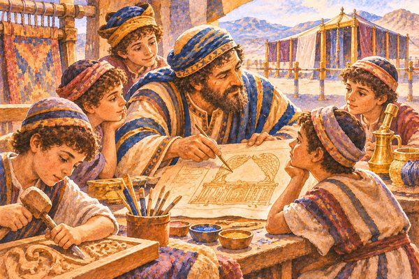
Школа Бецалеля. ПРИЗВАНИЕ УЧИТЬ2014 · Арт-мидраш, Библия и художник Начало СИОНИСТСКОГО ИСКУССТВА. Адес синагога2014 · Артефакты, Библия и художник
Начало СИОНИСТСКОГО ИСКУССТВА. Адес синагога2014 · Артефакты, Библия и художник Начало СИОНИСТСКОГО ИСКУССТВА. Часть III2014 · Артефакты, Библия и художник
Начало СИОНИСТСКОГО ИСКУССТВА. Часть III2014 · Артефакты, Библия и художник БЕН УРИ. 100 лет творческих поисков2014 · Артефакты, Библия и художник
БЕН УРИ. 100 лет творческих поисков2014 · Артефакты, Библия и художник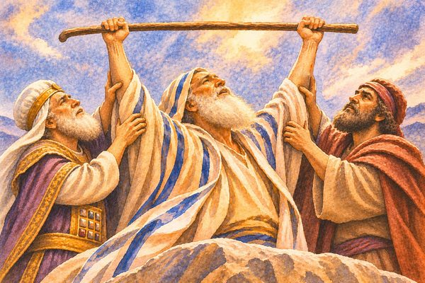
БЫЛИ РУКИ ЕГО - ВЕРА /Исх.17:12/2014 · Язык Библии, Арт-мидраш, Библия и художник ПОСВЯЩЕНИЕ ХУДОЖНИКА2015 · Библия и художник
ПОСВЯЩЕНИЕ ХУДОЖНИКА2015 · Библия и художник
 Хроника ОТКРОВЕНИЙ ОТ ТВОРЧЕСТВЕ2018 · Библия и художник
Хроника ОТКРОВЕНИЙ ОТ ТВОРЧЕСТВЕ2018 · Библия и художник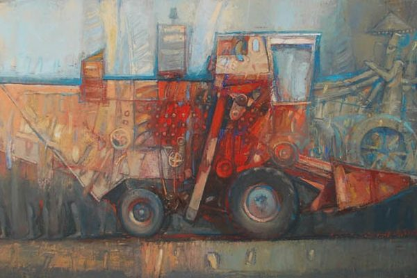
Талант художника - инструмент познания Творца2015 · Библия и художник- ПОСВЯЩЕНИЕ ХУДОЖНИКА2015 · Библия и художник
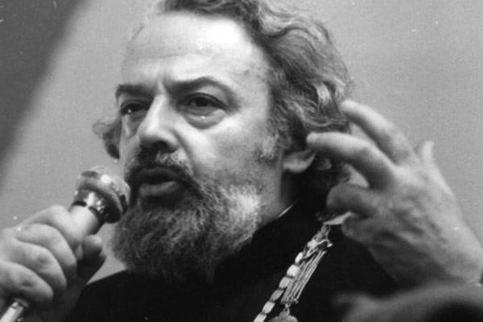
СОУЧАСТНИК В ТВОРЧЕСТВЕ БОГА. Александр Мень2015 · Библия и художник Как верующему художнику отвечать на восторги публики?2015 · Библия и художник
Как верующему художнику отвечать на восторги публики?2015 · Библия и художник- БЫЛИ РУКИ ЕГО - ВЕРА /Исх.17:12/2014 · Язык Библии, Арт-мидраш, Библия и художник
 Александр Антонюк. Вера не может мешать художнику2014 · Библия и художник
Александр Антонюк. Вера не может мешать художнику2014 · Библия и художник ТВОРЕНИЕ ЗВУКОМ | Творчество, как молитва2016 · Библия и художник
ТВОРЕНИЕ ЗВУКОМ | Творчество, как молитва2016 · Библия и художник Актер фильма "УШПИЗИН" - о своих поисках веры2015 · Библия и художник
Актер фильма "УШПИЗИН" - о своих поисках веры2015 · Библия и художник
 ХУДОЖНИК и ЦЕРКОВЬ. Размышления на тему2014 · Библия и художник
ХУДОЖНИК и ЦЕРКОВЬ. Размышления на тему2014 · Библия и художник Об отношении ЦЕРКВИ к ХУДОЖНИКАМ. Андрей Дириенко2014 · Библия и художник
Об отношении ЦЕРКВИ к ХУДОЖНИКАМ. Андрей Дириенко2014 · Библия и художник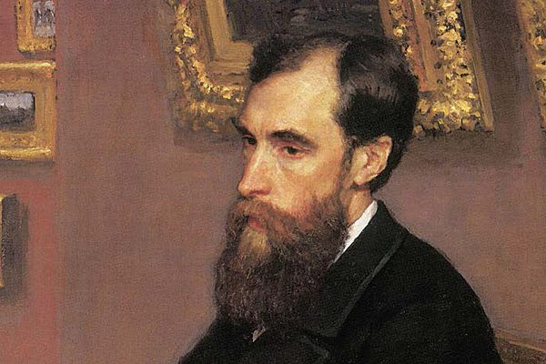
Есть ли МЕСТО МЕЦЕНАТСТВУ в теле Мессии СЕГОДНЯ?2016 · Библия и художник- Превращение поклонения Богу в концерт?2015 · Библия и художник
- Как верующему художнику отвечать на восторги публики?2015 · Библия и художник
- Смотреть или не смотреть...2015 · Библия и художник
- Александр Антонюк. Вера не может мешать художнику2014 · Библия и художник
 ЗАДАВАТЬ ВОПРОСЫ | Художник Александр Антонюк2018 · Библия и художник
ЗАДАВАТЬ ВОПРОСЫ | Художник Александр Антонюк2018 · Библия и художник ЕВРЕЙСКИЕ ОБРАЗЫ в творчестве католика Йозефа Регулы2015 · Израиль и Церковь, Библия и художник
ЕВРЕЙСКИЕ ОБРАЗЫ в творчестве католика Йозефа Регулы2015 · Израиль и Церковь, Библия и художник- ТВОРЕНИЕ ЗВУКОМ | Творчество, как молитва2016 · Библия и художник
 Тимур Хуснутдинов. ЕВРЕЙСКИЙ АЛЬБОМ2014 · Библия и художник
Тимур Хуснутдинов. ЕВРЕЙСКИЙ АЛЬБОМ2014 · Библия и художник МУЗЫКА ЕВРЕЙСКИХ ТЕКСТОВ. Виктория Хана2015 · Язык Библии, Библия и художник
МУЗЫКА ЕВРЕЙСКИХ ТЕКСТОВ. Виктория Хана2015 · Язык Библии, Библия и художник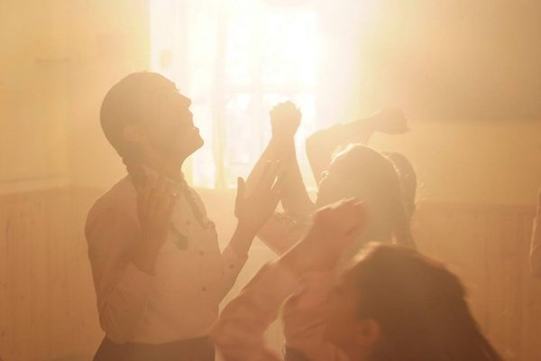
СОКРОВИЩА ИВРИТСКИХ СЛОВ Виктории Хана2015 · Библия и художник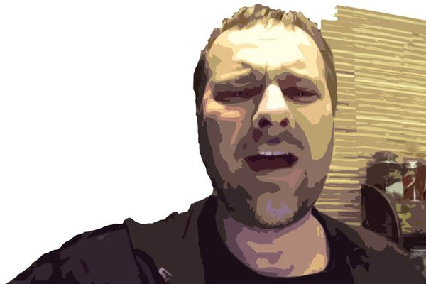
и СМЕХ, и НЕ ГРЕХ | Сергей Лукьянов2015 · Библия и художник- Пурим. Священное смехотворство2015 · Библия и художник, Праздники Господни
 Пурим-шпиль. ОБЛИЧИТЬ ЗЛО...2015 · Праздники Господни, Библия и художник
Пурим-шпиль. ОБЛИЧИТЬ ЗЛО...2015 · Праздники Господни, Библия и художник- Актер фильма "УШПИЗИН" - о своих поисках веры2015 · Библия и художник
 ПЕРВОЕ ВПЕЧАТЛЕНИЕ об Израиле2014 · Библия и художник
ПЕРВОЕ ВПЕЧАТЛЕНИЕ об Израиле2014 · Библия и художник ТВОРИТЬ ДОБРОЕ | Дизайнер одежды - Леся Репетивская2016 · Библия и художник
ТВОРИТЬ ДОБРОЕ | Дизайнер одежды - Леся Репетивская2016 · Библия и художник Идем в СВОЙ ГАРДЕРОБ. Размышления О МОДЕ2014 · Библия и художник
Идем в СВОЙ ГАРДЕРОБ. Размышления О МОДЕ2014 · Библия и художник Перспективы ИЗРАИЛЬСКОЙ МОДЫ2015 · Библия и художник
Перспективы ИЗРАИЛЬСКОЙ МОДЫ2015 · Библия и художник- Об отношении ЦЕРКВИ к ХУДОЖНИКАМ. Андрей Дириенко2014 · Библия и художник
- Есть ли МЕСТО МЕЦЕНАТСТВУ в теле Мессии СЕГОДНЯ?2016 · Библия и художник
 Читать руками: иллюстрация как исследование Писания2026 · Библия и художник
Читать руками: иллюстрация как исследование Писания2026 · Библия и художник Василий Поленов на Святой Земле2019 · Библия и художник
Василий Поленов на Святой Земле2019 · Библия и художник МАРК АНТОКОЛЬСКИЙ. ХРИСТОС перед судом народа. ч.I2014 · Библия и художник
МАРК АНТОКОЛЬСКИЙ. ХРИСТОС перед судом народа. ч.I2014 · Библия и художник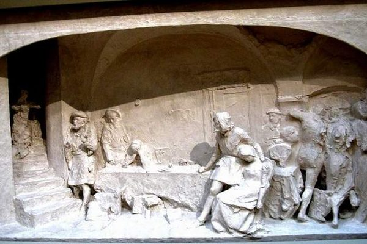
МАРК АНТОКОЛЬСКИЙ. ХРИСТОС перед судом народа. ч.II2014 · Библия и художник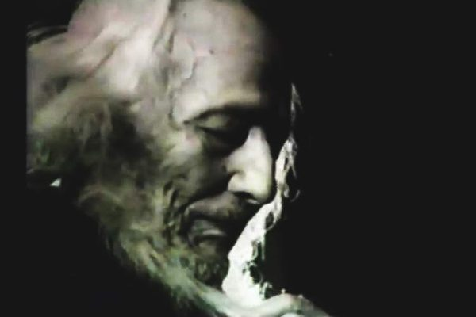
ВАН ГОГ В СКУЛЬПТУРЕ. Об Исааке Иткинде2014 · Библия и художник Джеймс Тиссо - ИЛЛЮСТРАТОР БИБЛИИ2014 · Библия и художник
Джеймс Тиссо - ИЛЛЮСТРАТОР БИБЛИИ2014 · Библия и художник ИСХОД из Египта. Взгляд Джеймса ТИССО2015 · Праздники Господни, Галереи, Библия и художник
ИСХОД из Египта. Взгляд Джеймса ТИССО2015 · Праздники Господни, Галереи, Библия и художник- Начало СИОНИСТСКОГО ИСКУССТВА. Адес синагога2014 · Артефакты, Библия и художник
- Начало СИОНИСТСКОГО ИСКУССТВА. Часть III2014 · Артефакты, Библия и художник
- БЕН УРИ. 100 лет творческих поисков2014 · Артефакты, Библия и художник
 ОБРАТИ нас и МЫ ОБРАТИМСЯ!2014 · Праздники Господни, Израиль и Церковь, Библия и художник
ОБРАТИ нас и МЫ ОБРАТИМСЯ!2014 · Праздники Господни, Израиль и Церковь, Библия и художник- ЕВРЕЙСКИЕ ОБРАЗЫ в творчестве католика Йозефа Регулы2015 · Израиль и Церковь, Библия и художник
- ВАН ГОГ В СКУЛЬПТУРЕ. Об Исааке Иткинде2014 · Библия и художник
- МАРК АНТОКОЛЬСКИЙ. ХРИСТОС перед судом народа. ч.I2014 · Библия и художник
- Тимур Хуснутдинов. ЕВРЕЙСКИЙ АЛЬБОМ2014 · Библия и художник
- ПЕРВОЕ ВПЕЧАТЛЕНИЕ об Израиле2014 · Библия и художник
- Перспективы ИЗРАИЛЬСКОЙ МОДЫ2015 · Библия и художник


- НАЗНАЧЕНА ДАТА ПРЕМЬЕРЫ / Армения ВОЗРОЖДЕНИЕ2019 · Библия и художник
 ЮВАЛЬ - Отец играющих на арфе и свирели2019 · Библия и художник, Арт-мидраш
ЮВАЛЬ - Отец играющих на арфе и свирели2019 · Библия и художник, Арт-мидраш Мы - творения Великого Мастера2018 · Артефакты, Библия и художник
Мы - творения Великого Мастера2018 · Артефакты, Библия и художник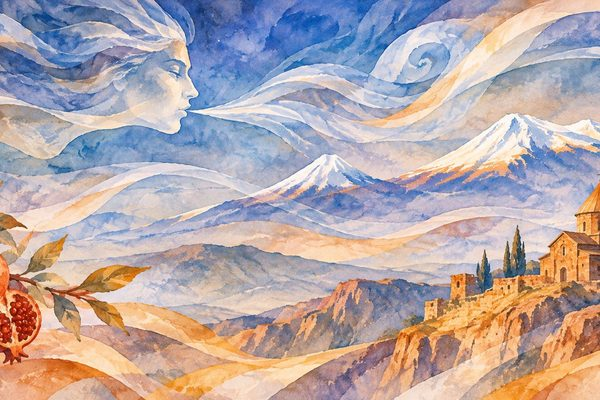
Приди ВЕТЕР с Севера ! П.Песн. 4:162018 · Арт-мидраш, Библия и художник БЛАГОСЛОВЕНИЕ ААРОНА | Зара Оганесян2018 · Израиль и Церковь, Библия и художник
БЛАГОСЛОВЕНИЕ ААРОНА | Зара Оганесян2018 · Израиль и Церковь, Библия и художник БЕЦАЛЕЛЬ - СЫН СВЕТА / полная версия /2018 · Арт-мидраш, Библия и художник
БЕЦАЛЕЛЬ - СЫН СВЕТА / полная версия /2018 · Арт-мидраш, Библия и художник ВСЕ СТАТЬИ о художнике Бецалеле | Веселеил - Исх. 31:22018 · Арт-мидраш, Библия и художник
ВСЕ СТАТЬИ о художнике Бецалеле | Веселеил - Исх. 31:22018 · Арт-мидраш, Библия и художник ИСХОД - это ПРО НАС2018 · Арт-мидраш, Праздники Господни, Библия и художник
ИСХОД - это ПРО НАС2018 · Арт-мидраш, Праздники Господни, Библия и художник ПРИЗВАНИЕ | Зара Оганесян2018 · Библия и художник
ПРИЗВАНИЕ | Зара Оганесян2018 · Библия и художник Израиль. СЛУЖБА В АРМИИ | СОХРАНИТЬ ВЕРУ2017 · Библия и художник
Израиль. СЛУЖБА В АРМИИ | СОХРАНИТЬ ВЕРУ2017 · Библия и художник ТВОРЧЕСТВО ДУХА | Роман Усачев2017 · Библия и художник
ТВОРЧЕСТВО ДУХА | Роман Усачев2017 · Библия и художник КОГДА ПОЕТ ДУДУК | Зара Оганесян о поклонении2017 · Библия и художник
КОГДА ПОЕТ ДУДУК | Зара Оганесян о поклонении2017 · Библия и художник Композитор СОФЬЯ ГУБАЙДУЛИНА и ее ВЕРА2017 · Библия и художник
Композитор СОФЬЯ ГУБАЙДУЛИНА и ее ВЕРА2017 · Библия и художник Сергей Лукьянов | МОЛИТВА и ВДОХНОВЕНИЕ2017 · Библия и художник
Сергей Лукьянов | МОЛИТВА и ВДОХНОВЕНИЕ2017 · Библия и художник СВИДЕТЕЛЬСТВО Музыканта. Искандер Зарипов2017 · Библия и художник
СВИДЕТЕЛЬСТВО Музыканта. Искандер Зарипов2017 · Библия и художник ПОКЛОНЕНИЕ В ИЗРАИЛЕ | Андрей Левин2016 · Израиль и Церковь, Библия и художник
ПОКЛОНЕНИЕ В ИЗРАИЛЕ | Андрей Левин2016 · Израиль и Церковь, Библия и художник Вопросы "Ноя"...2016 · Арт-мидраш, Библия и художник
Вопросы "Ноя"...2016 · Арт-мидраш, Библия и художник Знай ПРЕД КЕМ ты стоишь! СТОЛП ОГНЕННЫЙ2016 · Арт-мидраш, Артефакты, Галереи, Библия и художник, Праздники Господни
Знай ПРЕД КЕМ ты стоишь! СТОЛП ОГНЕННЫЙ2016 · Арт-мидраш, Артефакты, Галереи, Библия и художник, Праздники Господни ИСКУССТВО И ВЕЧНОСТЬ | Cуть творчества | Роман Усачев2016 · Библия и художник
ИСКУССТВО И ВЕЧНОСТЬ | Cуть творчества | Роман Усачев2016 · Библия и художник РИК ДЖОЙНЕР - о роли творчества в теле Мессии2016 · Библия и художник
РИК ДЖОЙНЕР - о роли творчества в теле Мессии2016 · Библия и художник ПУРИМ. Свиток Эстер художника Илияhу Сиди2016 · Праздники Господни, Библия и художник
ПУРИМ. Свиток Эстер художника Илияhу Сиди2016 · Праздники Господни, Библия и художник Духовные принципы в продвижении бизнеса2016 · Библия и художник
Духовные принципы в продвижении бизнеса2016 · Библия и художник За что Папа Франциск любит Марка Шагала?2016 · Израиль и Церковь, Библия и художник
За что Папа Франциск любит Марка Шагала?2016 · Израиль и Церковь, Библия и художник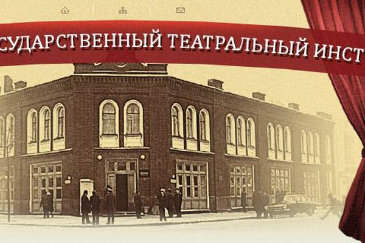
БОГ не ДАЛ МНЕ бросить ТЕАТРАЛЬНЫЙ институт2016 · Библия и художник ИОСИФ БРОДСКИЙ | Рождество | Читает Сергей Лукьянов2015 · Библия и художник
ИОСИФ БРОДСКИЙ | Рождество | Читает Сергей Лукьянов2015 · Библия и художник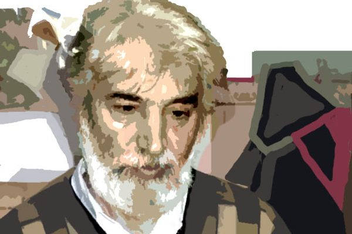
Владимир Абрамян. Райские сады детства2015 · Библия и художник все видео на одной странице2015 · Библия и художник
все видео на одной странице2015 · Библия и художник ПРОСЛАВЛЕНИЕ или концертное шоу?2015 · Библия и художник
ПРОСЛАВЛЕНИЕ или концертное шоу?2015 · Библия и художник Йом Кипур. Новая музыкальная версия молитвы2015 · Израиль и Церковь, Библия и художник, Праздники Господни
Йом Кипур. Новая музыкальная версия молитвы2015 · Израиль и Церковь, Библия и художник, Праздники Господни Борис Эйфман. Что мешает таланту?2015 · Библия и художник
Борис Эйфман. Что мешает таланту?2015 · Библия и художник ПОСЛАНИЕ от Марка Шагала2015 · Израиль и Церковь, Библия и художник
ПОСЛАНИЕ от Марка Шагала2015 · Израиль и Церковь, Библия и художник Современные художники трактуют ПАСХАЛЬНУЮ АГАДУ2015 · Арт-мидраш, Праздники Господни, Галереи, Библия и художник
Современные художники трактуют ПАСХАЛЬНУЮ АГАДУ2015 · Арт-мидраш, Праздники Господни, Галереи, Библия и художник СЛЫШАТЬ ГОЛОС ШОФАРА2015 · Библия и художник, Арт-мидраш, Праздники Господни
СЛЫШАТЬ ГОЛОС ШОФАРА2015 · Библия и художник, Арт-мидраш, Праздники Господни ПАСХАЛЬНАЯ АГАДА. Историческая справка2015 · Праздники Господни, Артефакты, Библия и художник
ПАСХАЛЬНАЯ АГАДА. Историческая справка2015 · Праздники Господни, Артефакты, Библия и художник Марк Шагал. Автопортрет на фоне неба2015 · Библия и художник
Марк Шагал. Автопортрет на фоне неба2015 · Библия и художник ИИСУС в еврейском искусстве2015 · Библия и художник
ИИСУС в еврейском искусстве2015 · Библия и художник Исход, который чуть не запретили, или как Ридли Скотт евреев из Египта спасал2015 · Библия и художник
Исход, который чуть не запретили, или как Ридли Скотт евреев из Египта спасал2015 · Библия и художник Тернии и звезды МАРКА АНТОКОЛЬСКОГО2014 · Библия и художник
Тернии и звезды МАРКА АНТОКОЛЬСКОГО2014 · Библия и художник Джеймс Тиссо: «Жизнь Христа»2014 · Библия и художник
Джеймс Тиссо: «Жизнь Христа»2014 · Библия и художник ОДИН ЧАС СУДНОГО ДНЯ в черно-белых тонах2014 · Праздники Господни, Библия и художник
ОДИН ЧАС СУДНОГО ДНЯ в черно-белых тонах2014 · Праздники Господни, Библия и художник Лучшие витражи МАРКА ШАГАЛА2014 · Библия и художник
Лучшие витражи МАРКА ШАГАЛА2014 · Библия и художник Екклесиаст. ФОТОПЕРЕВОД Дмитрия Брикмана2014 · Библия и художник
Екклесиаст. ФОТОПЕРЕВОД Дмитрия Брикмана2014 · Библия и художник МЕЧТА ХУДОЖНИКА. Тимур Хуснутдинов2014 · Библия и художник
МЕЧТА ХУДОЖНИКА. Тимур Хуснутдинов2014 · Библия и художник "В НАЧАЛЕ БЫЛО СЛОВО". Анна Пчелинцева2014 · Библия и художник
"В НАЧАЛЕ БЫЛО СЛОВО". Анна Пчелинцева2014 · Библия и художник- БЕЦАЛЕЛЬ / Веселеил /. Призвание2014 · Арт-мидраш, Библия и художник